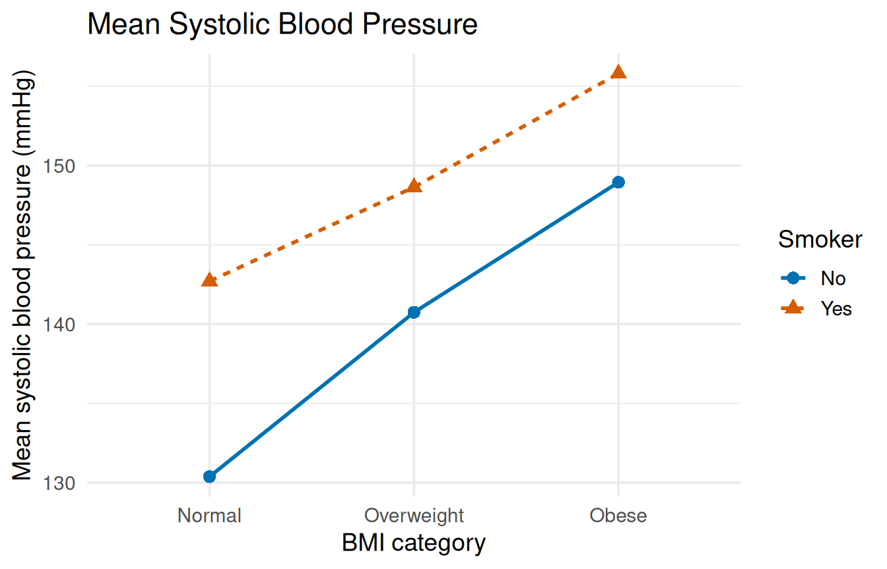

This chapter runs the three designs from Chapter 7 of the textbook: a two-way ANOVA with an interaction plot, an ANCOVA with adjusted means, and a repeated measures ANOVA. All three print an ANOVA table with the same layout, and all three follow the same stop sign rule: check the interaction first, because a significant interaction changes what the main effects mean.
The individual’s systolic blood pressure, measured in millimeters of mercury (mmHg).
BMI
smoking_bmi_bp.csv
Body Mass Index weight classification category based on clinical ranges (Normal, Overweight, or Obese).
Smoker
smoking_bmi_bp.csv
Tobacco cigarette smoking status, stored in the file as Yes or No.
Foot
census_at_school.csv
The student’s foot length measured in centimeters.
Height
census_at_school.csv
The student’s height measured in centimeters.
Gender
census_at_school.csv
The individual’s gender (Female or Male).
Sleep1, Sleep2
census_at_school.csv
The typical number of hours of sleep the student gets on a school night (Sleep1) and on a non-school night (Sleep2).
7.2 Load the packages
This chapter uses ggplot2, car, and emmeans. If any is not installed yet, go back to Install and load packages in Getting Set Up.
# ggplot2 draws the interaction plot, car makes the ANOVA tables,# and emmeans calculates adjusted means.library(ggplot2)library(car)
Loading required package: carData
library(emmeans)
Welcome to emmeans.
Caution: You lose important information if you filter this package's results.
See '? untidy'
# This setting makes R calculate the main effects with Type III# sums of squares, which do not depend on the order of the factors.# Run it once, before fitting any model. You do not need to change# it.options(contrasts =c("contr.sum", "contr.poly"))
NoteMessages: carData and Welcome to emmeans
Both packages print a message when they load: car loads a companion package of example datasets, and emmeans prints a welcome note. Both messages are normal, and you can ignore them.
The options(contrasts = ...) line changes a setting so that R calculates main effects with Type III sums of squares, which test each factor after accounting for everything else in the model, so the result does not depend on the order you list the factors. Type III needs this setting to give correct main effects, and it matches the textbook’s results. Run it once at the start of every session where you use these designs. You never need to change it.
NoteCheck: main effects that do not match
If you skip the options(contrasts = ...) line, Anova(..., type = 3) still prints a table with no error or warning, but the main effect rows of a model with an interaction test something different. Your numbers will not match this chapter or the textbook. If your main effects look different from what you expect, check that you ran this line before fitting the model, then fit the model again.
7.3 Two-way ANOVA
The question: does systolic blood pressure depend on BMI category, on smoking, or on the combination of the two?
# CHANGE THIS: the file name of your dataset, inside the quotes.pressure <-read.csv("smoking_bmi_bp.csv")# Put the BMI groups in order, as in Chapter 6.pressure$BMI <-factor(pressure$BMI,levels =c("Normal", "Overweight", "Obese"))
7.3.1 Check the cells
Check a two-way ANOVA’s assumptions at the level of the cells, the subgroups formed by crossing the two factors (here, 3 BMI groups × 2 smoking groups = 6 cells), because the model treats each cell as its own group. Putting both factors inside list() makes tapply() calculate one value per cell:
# 1. TWO-WAY ANOVA.# Cell means and standard deviations. Inside tapply(),# list(first, second) splits the data by BOTH factors at once,# giving one value per cell.# CHANGE THIS: your numerical variable and your two factorstapply(pressure$SystolicBP,list(pressure$BMI, pressure$Smoker), mean)
No Yes
Normal 130.3814 142.7111
Overweight 140.7458 148.6400
Obese 148.9487 155.8016
No Yes
Normal 28.91454 23.92556
Overweight 23.09993 26.83644
Obese 25.44814 28.97116
# The 2X rule, across all the cells.max(cell_sds) /min(cell_sds)
[1] 1.254167
The largest cell standard deviation is 1.25 times the smallest, under 2, so the cells pass the 2X rule. For the normality check, draw a Q-Q plot of the model’s residuals with the code from Chapter 6, after fitting the model below.
7.3.2 Interaction plot
An interaction plot draws one line per group of the second factor, joining the cell means:
# INTERACTION PLOT: one line per Smoker group, joining the group# means across the BMI categories.# color =, linetype =, and shape = all show the Smoker group,# so the lines can be told apart without color.# stat_summary(fun = mean, ...) plots the mean, drawn as a line# and as points.# CHANGE THIS: your first factor after x =, your numerical# variable after y =, and your second factor in the# four places it appearsggplot(pressure, aes(x = BMI, y = SystolicBP, color = Smoker,linetype = Smoker, shape = Smoker,group = Smoker)) +stat_summary(fun = mean, geom ="line", linewidth =1) +stat_summary(fun = mean, geom ="point", size =3) +scale_color_manual(values =c("#0072B2", "#D55E00")) +labs(title ="Mean Systolic Blood Pressure",x ="BMI category",y ="Mean systolic blood pressure (mmHg)",color ="Smoker", linetype ="Smoker", shape ="Smoker") +theme_minimal(base_size =14)

Interaction plot of mean systolic blood pressure by BMI category, with one line for smokers and one for nonsmokers.
The smokers’ line sits above the nonsmokers’ line in every BMI category, and the two lines are close to parallel. Parallel lines suggest no interaction; the ANOVA tells you whether any gap between them is more than noise.
7.3.3 The ANOVA table
Fit the model with lm() and both factors joined by *, then print the table with Anova() from the car package:
# THE TWO-WAY ANOVA.# BMI * Smoker includes both factors and their interaction,# as in Chapter 5.# Anova(..., type = 3) from the car package prints the Type III# table.# CHANGE THIS: your numerical variable, your two factors, your# dataset, and a name for your modelpressure_model <-lm(SystolicBP ~ BMI * Smoker, data = pressure)Anova(pressure_model, type =3)
Ignore the (Intercept) row. Then follow the stop sign rule:
The interaction first. The BMI:Smoker row has p = .584, far above .05. The interaction is not significant, so the stop sign turns green.
Then the main effects. BMI category has a significant main effect, \(F(2, 494) = 16.66\), p < .001, and so does smoking, \(F(1, 494) = 12.99\), p < .001. Each row’s Df is its first degrees of freedom, and the Residuals row’s Df (494) is the second.
If the interaction had been significant, you would stop at step 1 and describe the interaction (using the plot) instead of the main effects.
TipWith your own data
Change the numerical variable and the two factors everywhere they appear: in tapply(), the plot (the second factor appears four times inside aes()), and the model. If a factor’s groups are stored as numbers, wrap it in factor() first, as in Chapter 6.
7.4 ANCOVA
The question: do female and male students differ in foot length once height is taken into account? Height is the covariate, the numerical variable the ANCOVA levels the playing field on.
# CHANGE THIS: the file name of your dataset, inside the quotes.students <-read.csv("census_at_school.csv")
7.4.1 Check the slopes
The key ANCOVA assumption is that the covariate relates to the response the same way in every group, so that one adjustment is fair to all of them. Test it with the covariate-by-group interaction:
# 2. ANCOVA.# First, the assumption check: does the covariate (Height)# relate to the response (Foot) the same way in each group?# Height * Gender tests the covariate-by-group interaction.# CHANGE THIS: your response, your covariate, your group# variable, and your datasetslopes_check <-lm(Foot ~ Height * Gender, data = students)Anova(slopes_check, type =3)
The Height:Gender row has p = .167, above .05, so the slopes are similar enough and the ANCOVA can go ahead. (If this interaction were significant, the groups’ slopes would differ, and an ANCOVA would not be appropriate.)
The other new assumption, linearity, is checked with a scatterplot of the response against the covariate, using the code from Chapter 4.
7.4.2 The ANCOVA table
The ANCOVA itself uses + instead of *, leaving the interaction out:
# THE ANCOVA: the covariate and the group, joined with + (no# interaction).# CHANGE THIS: the same variables, joined with +foot_model <-lm(Foot ~ Height + Gender, data = students)Anova(foot_model, type =3)
The covariate row (Height): height strongly predicts foot length, \(F(1, 497) = 108.23\), p < .001.
The group row (Gender): female and male students differ in foot length even after accounting for height, \(F(1, 497) = 30.11\), p < .001.
7.4.3 Adjusted means
emmeans() gives each group’s adjusted mean: its predicted mean for students of the same, average height.
# ADJUSTED MEANS: each group's mean foot length for students of# the same (average) height. The name in quotes is your group# variable.# CHANGE THIS: your model name and your group variableemmeans(foot_model, "Gender")
# For comparison, the raw (unadjusted) group means.tapply(students$Foot, students$Gender, mean)
Female Male
23.51423 26.48917
The raw means differ by almost 3 cm (23.51 vs. 26.49), but most of that gap comes from male students being taller on average. For students of the same height, the adjusted means differ by only about 1.3 cm (24.3 vs. 25.6). The lower.CL and upper.CL columns are each adjusted mean’s 95% confidence interval.
TipWith your own data
Change the response, covariate, group variable, and dataset in both models, and the model name and group variable in emmeans(). Use a covariate measured before the treatment or grouping could affect it (for example, a baseline score). If the treatment changed the covariate, adjusting for it would remove part of the effect you are trying to measure.
7.5 Repeated measures ANOVA
The question: do students sleep a different amount on school nights and non-school nights, and is that difference the same for female and male students? Each student answered both sleep questions, so the two measurements are within-subjects, and Gender is the between-subjects factor.
The data are in wide form: one row per student, with the two measurements in separate columns. The repeated measures ANOVA takes three steps:
# 3. REPEATED MEASURES ANOVA, with the data in "wide" form: one# row per person, one column per time point.# cbind(Sleep1, Sleep2) joins the two measurements of the same# people, in time order. Gender is the between-subjects# factor.# CHANGE THIS: your repeated measurements inside cbind(), your# between-subjects factor, and your datasetsleep_model <-lm(cbind(Sleep1, Sleep2) ~ Gender, data = students)# nights names the measurements, in the same order as in# cbind(): a factor called Night with two levels.# CHANGE THIS: a name for your time factor and a label for each# measurement, in ordernights <-data.frame(Night =factor(c("School", "Weekend")))# idata = nights and idesign = ~ Night tell Anova() which# columns are the repeated measurements.# multivariate = FALSE prints the standard ANOVA table.# CHANGE THIS: your time factor's name after the ~sleep_anova <-Anova(sleep_model, idata = nights,idesign =~ Night, type =3)summary(sleep_anova, multivariate =FALSE)
Univariate Type III Repeated-Measures ANOVA Assuming Sphericity
Sum Sq num Df Error SS den Df F value Pr(>F)
(Intercept) 61371 1 1059.70 498 28840.8544 <2e-16 ***
Gender 0 1 1059.70 498 0.0169 0.8965
Night 1089 1 721.24 498 752.1426 <2e-16 ***
Gender:Night 4 1 721.24 498 2.6174 0.1063
---
Signif. codes: 0 '***' 0.001 '**' 0.01 '*' 0.05 '.' 0.1 ' ' 1
cbind(Sleep1, Sleep2) joins the two measurements of the same students into the response, in time order.
nights names them: a factor called Night with one label per measurement, in the same order as cbind().
Anova() with idata and idesign uses those names to run the test. multivariate = FALSE prints the standard table (a longer multivariate version prints if you leave it out).
Read the table with the same stop sign rule, ignoring the (Intercept) row:
Reading the repeated measures table
Row
What it tests
In this example
Gender:Night
The interaction: does the change from school to non-school nights differ by gender?
\(F(1, 498) = 2.62\), p = .106, not significant
Night
The main effect of time
\(F(1, 498) = 752.14\), p < .001
Gender
The main effect of the between-subjects factor
\(F(1, 498) = 0.02\), p = .897
The interaction is not significant, so the main effects can be read: students sleep significantly more on non-school nights, and female and male students do not differ in their overall sleep. The degrees of freedom for each row are num Df and den Df.
WarningCommon error: the labels do not match the measurements
Error in `dimnames(x) <- dn`:
! length of 'dimnames' [1] not equal to array extent
What it means:cbind() joined two measurements, but nights has three labels. The number of labels must match the number of measurements.
How to fix it: give the factor exactly one label per column inside cbind(), in the same order.
TipWith your own data
Put your repeated measurements inside cbind() in time order, and your between-subjects factor after the ~. Then give the time factor a name and one label per measurement, and use that name after idesign = ~. With three or more time points, list them all in cbind() and give one label each.